Alle Einheiten
212 Einheiten aus zehn Zeitaltern. Spaltenköpfe anklicken zum Sortieren, Namen anklicken für die ausführliche Karte mit Bild, Stärken, Schwächen und Tipp.
Tabelle
| Name | Gruppe | Zeitalter | Preis | Stärke | je Einheit | Leben | Rüstung | Schaden | Reichweite | Tempo | Moral | |
|---|---|---|---|---|---|---|---|---|---|---|---|---|
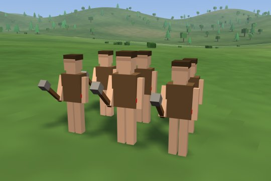 | Neandertaler-Krieger |  Urmenschen Urmenschen | Urzeit | 240 | 60 | 4 | 125 | 5 % | 30 | – | 4 | 55 |
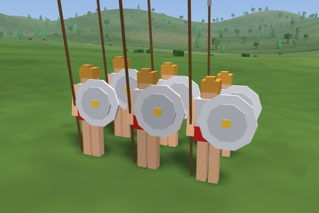 | Argyraspiden (Silberschilde) | ") Speer & Pike Speer & Pike | Antike | 1.200 | 60 | 20 | 150 | 50 % | 30 | – | 3,5 | 120 |
 | Athenische Epilektoi | Speer & Pike | Antike | 945 | 70 | 13,5 | 135 | 50 % | 28 | – | 3,4 | 90 |
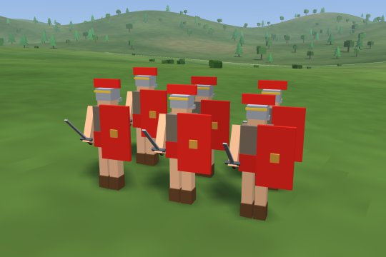 | Batavische Hilfstruppen | ") Schwert & Axt Schwert & Axt | Antike | 665 | 70 | 9,5 | 115 | 35 % | 26 | – | 4,1 | 85 |
 | Gallischer Krieger | Schwert & Axt | Antike | 495 | 90 | 5,5 | 100 | 10 % | 34 | – | 4,1 | 60 |
 | Germanische Leibwache | Schwert & Axt | Antike | 750 | 50 | 15 | 140 | 30 % | 34 | – | 3,8 | 105 |
 | Germanischer Krieger | Speer & Pike | Antike | 450 | 90 | 5 | 105 | 10 % | 30 | – | 4 | 62 |
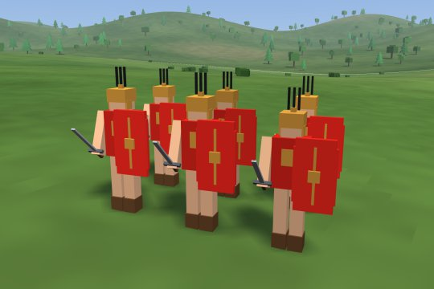 | Hastatus | Schwert & Axt | Antike | 480 | 80 | 6 | 95 | 40 % | 24 | – | 3,4 | 62 |
 | Heilige Schar Karthagos | Speer & Pike | Antike | 1.050 | 60 | 17,5 | 145 | 55 % | 28 | – | 3,2 | 100 |
 | Heilige Schar von Theben | Speer & Pike | Antike | 1.140 | 60 | 19 | 150 | 50 % | 30 | – | 3,5 | 150 |
 | Hethitischer Speerträger | Speer & Pike | Antike | 400 | 80 | 5 | 90 | 25 % | 22 | – | 3,4 | 60 |
 | Hoplit | Speer & Pike | Antike | 640 | 80 | 8 | 110 | 45 % | 26 | – | 3,3 | 70 |
 | Keltiberische Scutarii | Schwert & Axt | Antike | 600 | 80 | 7,5 | 110 | 30 % | 30 | – | 3,9 | 75 |
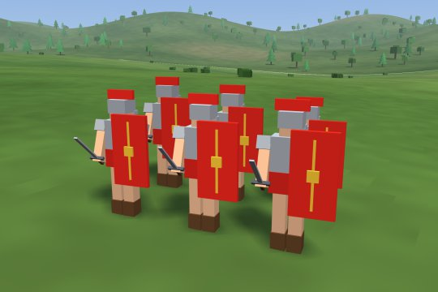 | Legionär | Schwert & Axt | Antike | 680 | 80 | 8,5 | 110 | 50 % | 26 | – | 3,2 | 75 |
 | Libysche Speerträger | Speer & Pike | Antike | 840 | 80 | 10,5 | 125 | 45 % | 27 | – | 3,4 | 85 |
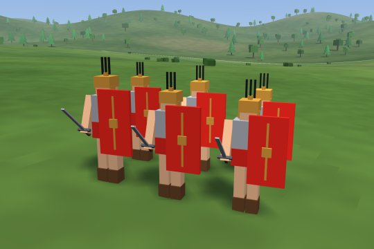 | Pedites Extraordinarii | Schwert & Axt | Antike | 770 | 70 | 11 | 120 | 45 % | 27 | – | 3,5 | 85 |
 | Phalangit | Speer & Pike | Antike | 600 | 100 | 6 | 85 | 30 % | 28 | – | 2,9 | 65 |
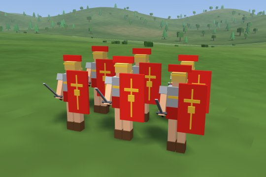 | Prätorianer | Schwert & Axt | Antike | 960 | 60 | 16 | 140 | 55 % | 30 | – | 3,3 | 95 |
 | Spartaner | Speer & Pike | Antike | 1.080 | 60 | 18 | 150 | 50 % | 32 | – | 3,4 | 95 |
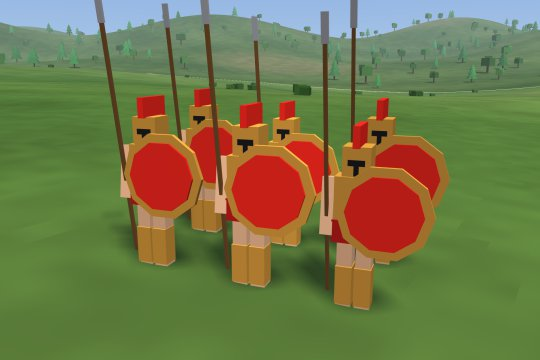 | Spartanische Hippeis | Speer & Pike | Antike | 1.050 | 50 | 21 | 165 | 55 % | 33 | – | 3,5 | 115 |
 | Triarier | Speer & Pike | Antike | 660 | 60 | 11 | 130 | 50 % | 26 | – | 3,1 | 90 |
 | Unsterblicher | Speer & Pike | Antike | 760 | 80 | 9,5 | 110 | 35 % | 24 | – | 3,5 | 80 |
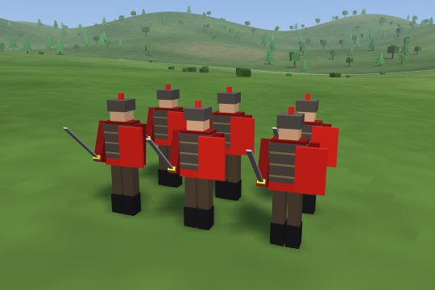 | Xianzhen (Gao Shuns Sturmtruppe) | Schwert & Axt | Antike | 850 | 50 | 17 | 145 | 50 % | 34 | – | 3,8 | 120 |
 | Yulin-Garde (Gefiederter Wald) | Speer & Pike | Antike | 990 | 60 | 16,5 | 140 | 55 % | 31 | – | 3,5 | 100 |
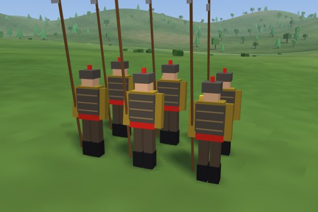 | Zhijinwu-Garde (Goldene Keule) | Speer & Pike | Antike | 840 | 70 | 12 | 125 | 45 % | 28 | – | 3,3 | 90 |
 | Ägyptischer Krieger | Schwert & Axt | Antike | 360 | 80 | 4,5 | 85 | 15 % | 26 | – | 3,7 | 55 |
 | Berserker | Schwert & Axt | Frühmittelalter | 315 | 30 | 10,5 | 130 | 5 % | 34 | – | 4,8 | 140 |
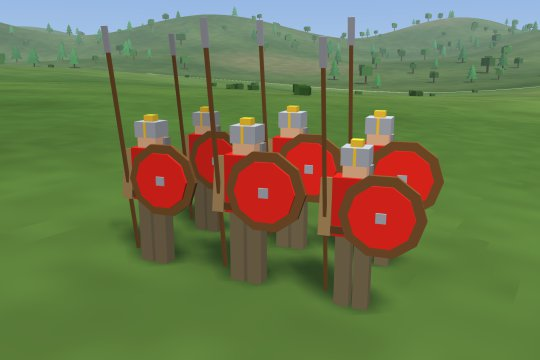 | Fränkischer Speerträger | Speer & Pike | Frühmittelalter | 360 | 80 | 4,5 | 90 | 30 % | 22 | – | 3,4 | 55 |
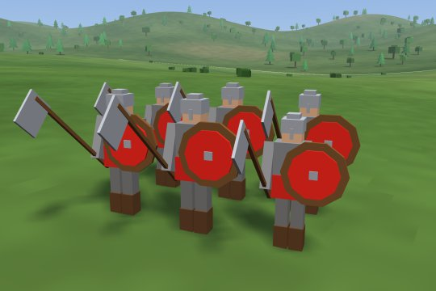 | Huskarl | Schwert & Axt | Frühmittelalter | 750 | 60 | 12,5 | 130 | 45 % | 48 | – | 3,4 | 90 |
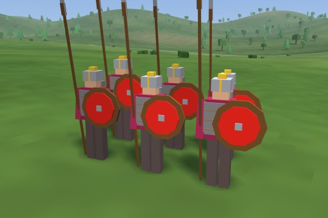 | Menavlatoi (Byzanz) | Speer & Pike | Frühmittelalter | 540 | 60 | 9 | 120 | 45 % | 30 | – | 3,2 | 80 |
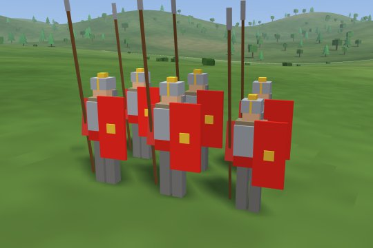 | Skutatos (Byzanz) | Speer & Pike | Frühmittelalter | 560 | 80 | 7 | 105 | 50 % | 24 | – | 3,2 | 70 |
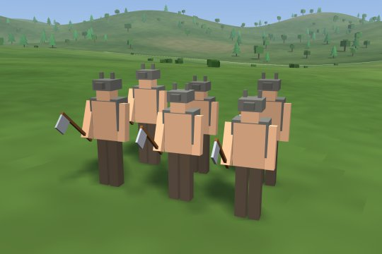 | Ulfheðnar (Wolfskrieger) | Schwert & Axt | Frühmittelalter | 330 | 30 | 11 | 125 | 10 % | 33 | – | 5 | 150 |
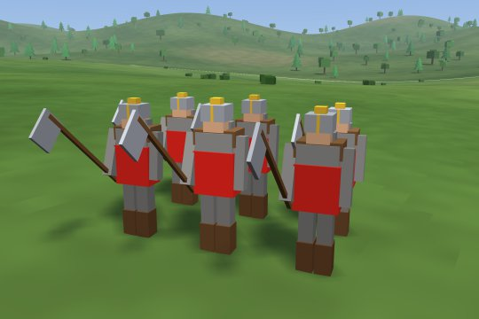 | Warägergarde | Schwert & Axt | Frühmittelalter | 840 | 60 | 14 | 140 | 50 % | 44 | – | 3,4 | 95 |
 | Wikinger | Schwert & Axt | Frühmittelalter | 490 | 70 | 7 | 100 | 20 % | 38 | – | 4 | 75 |
 | Bauer | Speer & Pike | Hochmittelalter | 180 | 120 | 1,5 | 55 | 0 % | 16 | – | 3,6 | 38 |
 | Hellebardier | Speer & Pike | Hochmittelalter | 640 | 80 | 8 | 90 | 30 % | 34 | – | 3,2 | 70 |
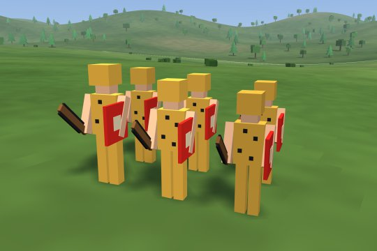 | Jaguarkrieger (Azteken) | Schwert & Axt | Hochmittelalter | 425 | 50 | 8,5 | 95 | 20 % | 28 | – | 4,6 | 85 |
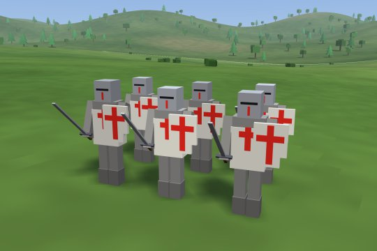 | Kreuzritter | Schwert & Axt | Hochmittelalter | 1.000 | 50 | 20 | 160 | 65 % | 34 | – | 3 | 95 |
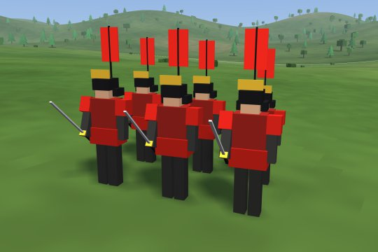 | Samurai | Schwert & Axt | Hochmittelalter | 750 | 60 | 12,5 | 100 | 40 % | 36 | – | 3,7 | 85 |
 | Schwertkämpfer | Schwert & Axt | Hochmittelalter | 520 | 80 | 6,5 | 90 | 45 % | 26 | – | 3,3 | 60 |
 | Speerknecht | Speer & Pike | Hochmittelalter | 350 | 100 | 3,5 | 80 | 30 % | 22 | – | 3,3 | 50 |
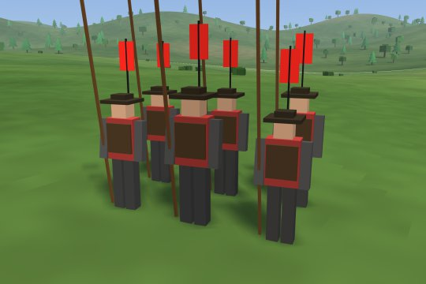 | Ashigaru | Speer & Pike | Renaissance | 350 | 100 | 3,5 | 70 | 20 % | 24 | – | 3,6 | 50 |
 | Konquistador | Schwert & Axt | Renaissance | 600 | 50 | 12 | 110 | 55 % | 30 | – | 3,5 | 80 |
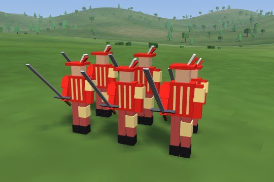 | Landsknecht | Schwert & Axt | Renaissance | 660 | 60 | 11 | 110 | 30 % | 44 | – | 3,5 | 80 |
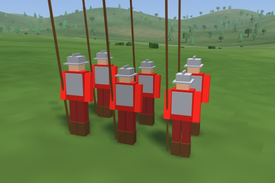 | Pikenier | Speer & Pike | Renaissance | 440 | 80 | 5,5 | 80 | 30 % | 28 | – | 3 | 60 |
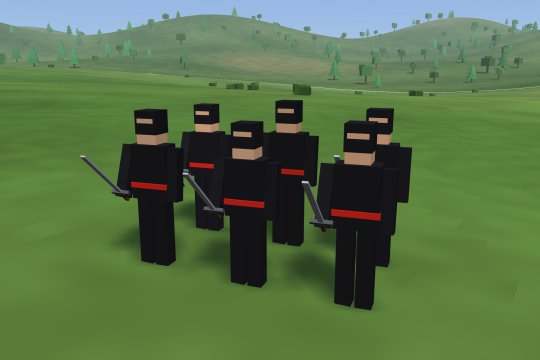 | Shinobi (Ninja) | Schwert & Axt | Renaissance | 224 | 16 | 14 | 85 | 10 % | 30 | – | 6,5 | 90 |
 | Highlander | Schwert & Axt | Linienzeit | 600 | 60 | 10 | 105 | 10 % | 38 | – | 4,4 | 75 |
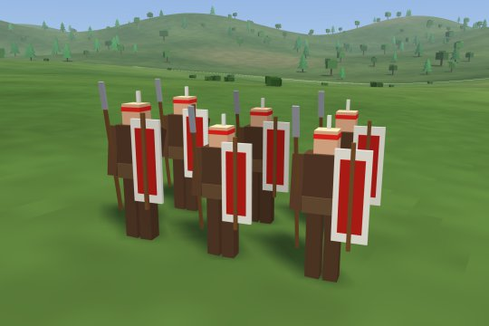 | Zulu-Krieger | Speer & Pike | Linienzeit | 550 | 100 | 5,5 | 85 | 5 % | 28 | – | 4,8 | 75 |
 | Cyborg | Hightech-Nahkampf | Zukunft | 1.190 | 20 | 59,5 | 390 | 50 % | 78 | – | 6,5 | 100 |
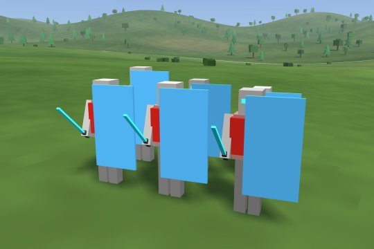 | Schildtruppe | Hightech-Nahkampf | Zukunft | 1.530 | 30 | 51 | 330 | 60 % | 52 | – | 4,6 | 95 |
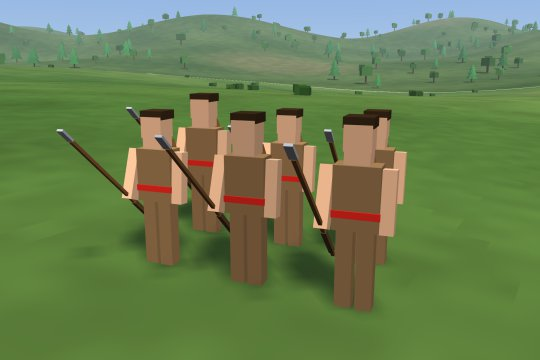 | Speerschleuderer | ") Bogen, Armbrust & Wurf Bogen, Armbrust & Wurf | Urzeit | 240 | 60 | 4 | 60 | 0 % | 14 | 42 m | 4,4 | 50 |
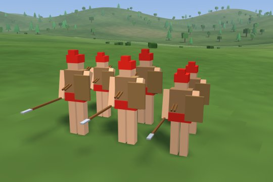 | Agrianer | Bogen, Armbrust & Wurf | Antike | 420 | 60 | 7 | 80 | 10 % | 18 | 42 m | 5,2 | 75 |
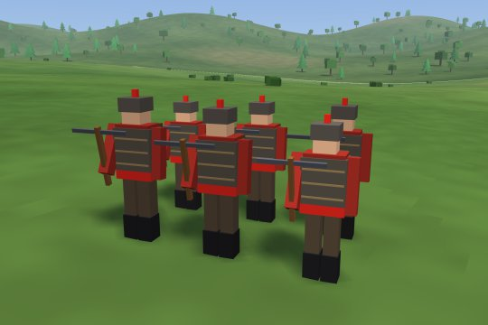 | Chu-Armbrustschützen | Bogen, Armbrust & Wurf | Antike | 600 | 60 | 10 | 110 | 50 % | 18 | 175 m | 3,5 | 80 |
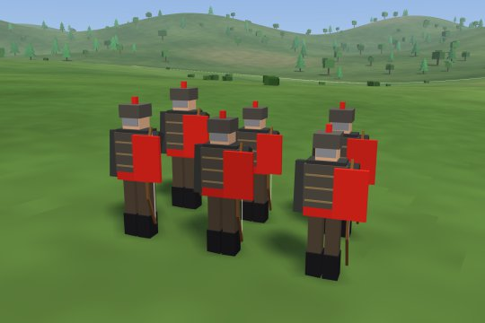 | Elite des Staates Han |  Bogen, Armbrust & Wurf Bogen, Armbrust & Wurf | Antike | 900 | 60 | 15 | 130 | 55 % | 28 | 150 m | 3,4 | 95 |
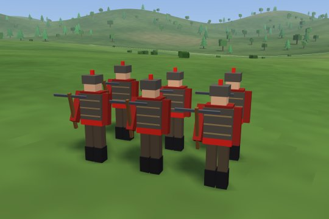 | Han-Elitearmbrustschützen | Bogen, Armbrust & Wurf | Antike | 650 | 50 | 13 | 95 | 35 % | 16 | 220 m | 3,3 | 80 |
 | Kretischer Bogenschütze | Bogen, Armbrust & Wurf | Antike | 360 | 60 | 6 | 60 | 10 % | 14 | 160 m | 3,8 | 55 |
 | Medjay-Bogenschütze | Bogen, Armbrust & Wurf | Antike | 390 | 60 | 6,5 | 65 | 5 % | 14 | 170 m | 4 | 65 |
 | Persischer Bogenschütze | Bogen, Armbrust & Wurf | Antike | 360 | 80 | 4,5 | 60 | 10 % | 12 | 165 m | 3,5 | 50 |
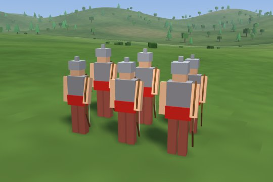 | Römischer Bogenschütze | Bogen, Armbrust & Wurf | Antike | 480 | 80 | 6 | 65 | 30 % | 14 | 160 m | 3,5 | 60 |
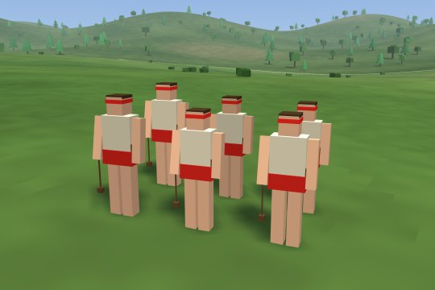 | Schleuderer | Bogen, Armbrust & Wurf | Antike | 280 | 80 | 3,5 | 55 | 0 % | 12 | 120 m | 3,8 | 45 |
 | Speerwerfer | Bogen, Armbrust & Wurf | Antike | 315 | 70 | 4,5 | 65 | 10 % | 16 | 30 m | 4,2 | 55 |
 | Wei-Wuzu (Elite von Wei) | Bogen, Armbrust & Wurf | Antike | 780 | 60 | 13 | 120 | 50 % | 28 | 165 m | 3,7 | 90 |
 | Ägyptischer Bogenschütze | Bogen, Armbrust & Wurf | Antike | 400 | 80 | 5 | 55 | 5 % | 12 | 176 m | 3,8 | 45 |
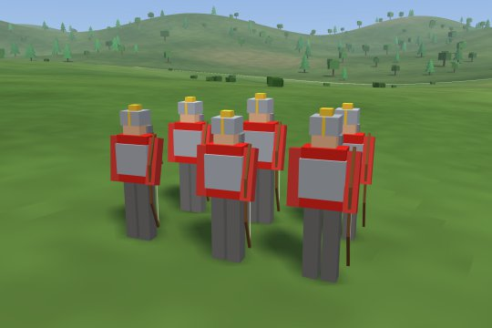 | Byzantinischer Bogenschütze | Bogen, Armbrust & Wurf | Frühmittelalter | 440 | 80 | 5,5 | 65 | 25 % | 14 | 170 m | 3,5 | 60 |
 | Wikinger-Bogenschütze | Bogen, Armbrust & Wurf | Frühmittelalter | 300 | 60 | 5 | 75 | 15 % | 20 | 165 m | 3,8 | 65 |
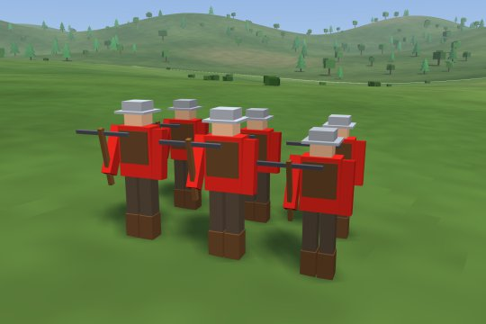 | Armbrustschütze | Bogen, Armbrust & Wurf | Hochmittelalter | 600 | 80 | 7,5 | 60 | 15 % | 15 | 160 m | 3,3 | 55 |
 | Bogensamurai | Bogen, Armbrust & Wurf | Hochmittelalter | 400 | 40 | 10 | 90 | 40 % | 22 | 180 m | 3,6 | 85 |
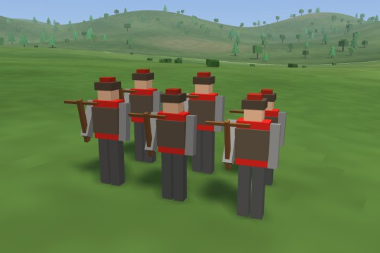 | Chinesischer Armbrustschütze | Bogen, Armbrust & Wurf | Hochmittelalter | 520 | 80 | 6,5 | 60 | 20 % | 14 | 150 m | 3,3 | 55 |
 | Feuerpfeil-Schütze (China) | Schwere Waffen | Hochmittelalter | 320 | 40 | 8 | 60 | 10 % | 12 | 120 m | 4 | 50 |
 | Langbogenschütze | Bogen, Armbrust & Wurf | Hochmittelalter | 480 | 80 | 6 | 55 | 5 % | 14 | 242 m | 3,6 | 50 |
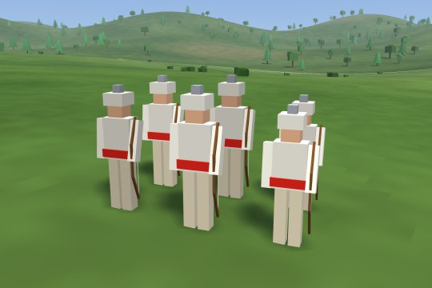 | Sarazenischer Bogenschütze | Bogen, Armbrust & Wurf | Hochmittelalter | 520 | 80 | 6,5 | 60 | 15 % | 13 | 180 m | 3,8 | 55 |
 | Arkebusier | Musketen | Renaissance | 520 | 80 | 6,5 | 60 | 20 % | 16 | 70 m | 3,2 | 55 |
 | Janitschar | Musketen | Renaissance | 660 | 60 | 11 | 75 | 10 % | 24 | 100 m | 3,5 | 85 |
 | Musketier | Musketen | Renaissance | 640 | 80 | 8 | 60 | 10 % | 18 | 90 m | 3,3 | 55 |
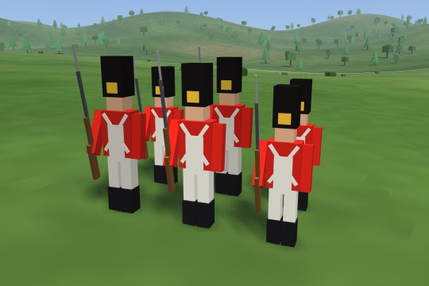 | Gardegrenadier | Musketen | Linienzeit | 1.200 | 60 | 20 | 95 | 15 % | 28 | 110 m | 3,6 | 100 |
 | Grenadier |  Bogen, Armbrust & Wurf Bogen, Armbrust & Wurf | Linienzeit | 600 | 40 | 15 | 80 | 10 % | 22 | 30 m | 3,4 | 75 |
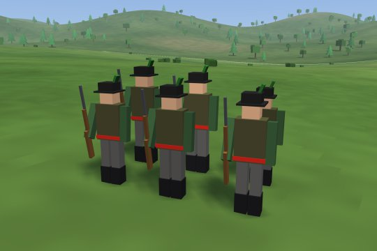 | Jäger | Musketen | Linienzeit | 560 | 40 | 14 | 60 | 5 % | 14 | 230 m | 3,8 | 60 |
 | Linieninfanterie | Musketen | Linienzeit | 880 | 80 | 11 | 70 | 10 % | 24 | 110 m | 3,5 | 65 |
 | Voltigeur | Musketen | Linienzeit | 630 | 60 | 10,5 | 65 | 5 % | 18 | 120 m | 4,2 | 60 |
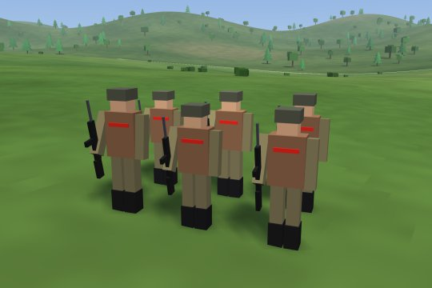 | Fallschirmjäger | Gewehre & MG | Weltkriege | 1.545 | 30 | 51,5 | 90 | 25 % | 22 | 350 m | 4,6 | 85 |
 | Feldmarschall |  Feldherren Feldherren | Weltkriege | 1.650 | 1 | 1.650 | 420 | 45 % | 24 | 110 m | 4,6 | 250 |
 | Flammenwerfer | Schwere Waffen | Weltkriege | 645 | 10 | 64,5 | 90 | 20 % | 14 | 30 m | 3,6 | 75 |
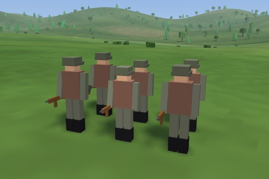 | Granatwerfer-Trupp | Schwere Waffen | Weltkriege | 720 | 12 | 60 | 80 | 15 % | 14 | 600 m | 3,4 | 65 |
 | Infanterist (WK) | Gewehre & MG | Weltkriege | 1.040 | 40 | 26 | 75 | 10 % | 22 | 350 m | 3,9 | 65 |
 | MG-Schütze | Gewehre & MG | Weltkriege | 870 | 12 | 72,5 | 85 | 20 % | 14 | 500 m | 3,4 | 70 |
 | Stoßtruppe | Gewehre & MG | Weltkriege | 1.290 | 30 | 43 | 90 | 20 % | 26 | 120 m | 4,4 | 85 |
 | Mot.-Schütze | Gewehre & MG | Kalter Krieg | 1.300 | 50 | 26 | 78 | 15 % | 16 | 380 m | 4 | 65 |
 | Kommandeur | Feldherren | Gegenwart | 1.950 | 1 | 1.950 | 420 | 45 % | 24 | 150 m | 4,6 | 250 |
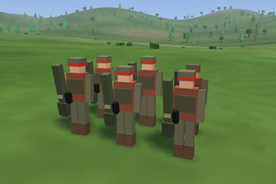 | Panzerabwehrtrupp | Schwere Waffen | Gegenwart | 792 | 6 | 132 | 80 | 25 % | 14 | 900 m | 3,8 | 75 |
 | Panzerfaust-Schütze | Schwere Waffen | Gegenwart | 1.056 | 16 | 66 | 80 | 20 % | 14 | 300 m | 4 | 70 |
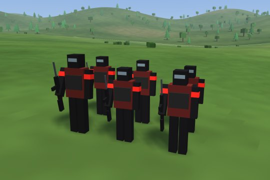 | SAS | Gewehre & MG | Gegenwart | 1.850 | 20 | 92,5 | 110 | 30 % | 30 | 450 m | 4,8 | 95 |
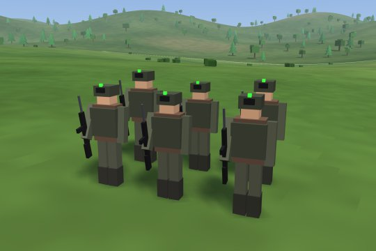 | SEAL Team 6 (DEVGRU) | Gewehre & MG | Gegenwart | 1.266 | 12 | 105,5 | 125 | 35 % | 30 | 480 m | 5,2 | 140 |
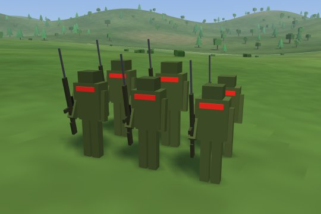 | Scharfschütze | Gewehre & MG | Gegenwart | 1.002 | 12 | 83,5 | 70 | 10 % | 14 | 800 m | 3,8 | 75 |
 | Soldat | Gewehre & MG | Gegenwart | 1.400 | 40 | 35 | 80 | 20 % | 16 | 400 m | 4,2 | 70 |
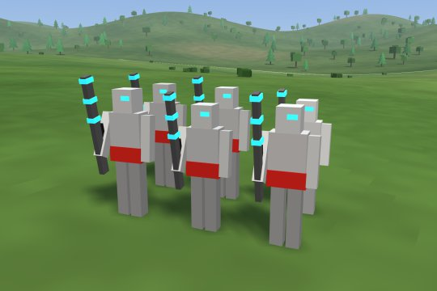 | Gauß-Scharfschütze | Energiewaffen | Zukunft | 476 | 8 | 59,5 | 165 | 40 % | 21 | 1.500 m | 4,2 | 80 |
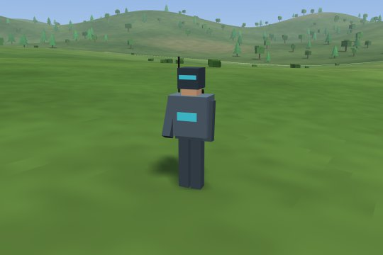 | KI-Kommandeur | Feldherren | Zukunft | 2.400 | 1 | 2.400 | 800 | 70 % | 24 | 170 m | 4,6 | 250 |
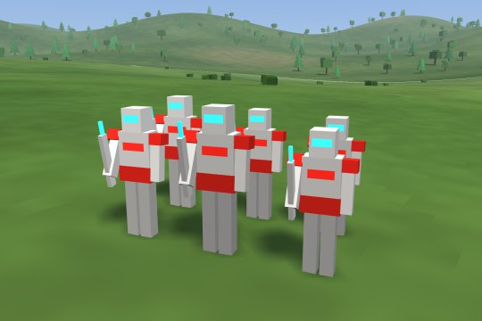 | Lasersoldat | Energiewaffen | Zukunft | 1.320 | 30 | 44 | 180 | 45 % | 29 | 600 m | 4,4 | 85 |
 | Plasmawerfer | Energiewaffen | Zukunft | 1.088 | 16 | 68 | 225 | 50 % | 26 | 450 m | 3,8 | 90 |
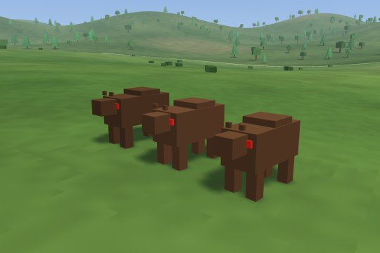 | Höhlenbär |  Tiere & Dinosaurier Tiere & Dinosaurier | Urzeit | 156 | 6 | 26 | 650 | 15 % | 62 | – | 6,5 | 90 |
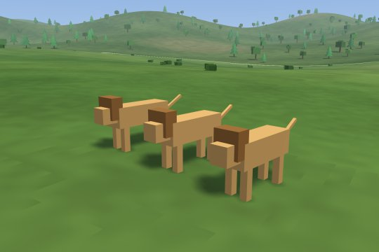 | Höhlenlöwe | Tiere & Dinosaurier | Urzeit | 144 | 8 | 18 | 320 | 5 % | 50 | – | 10 | 90 |
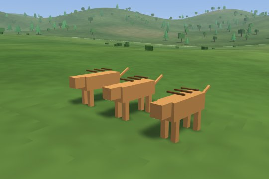 | Säbelzahntiger | Tiere & Dinosaurier | Urzeit | 132 | 6 | 22 | 380 | 8 % | 66 | – | 9 | 90 |
| Triceratops | Tiere & Dinosaurier | Urzeit | 1.200 | 2 | 600 | 3.800 | 50 % | 140 | – | 6,5 | 140 | |
| Tyrannosaurus rex | Tiere & Dinosaurier | Urzeit | 1.400 | 1 | 1.400 | 5.200 | 35 % | 230 | – | 7,5 | 300 | |
| Velociraptor | Tiere & Dinosaurier | Urzeit | 144 | 16 | 9 | 160 | 5 % | 30 | – | 12 | 90 | |
 | Wolfsrudel | Tiere & Dinosaurier | Urzeit | 84 | 24 | 3,5 | 110 | 0 % | 22 | – | 11 | 90 |
| Wollhaarmammut | Tiere & Dinosaurier | Urzeit | 1.400 | 4 | 350 | 2.600 | 30 % | 90 | – | 5,5 | 110 | |
 | Alexander der Große | Feldherren | Antike | 1.425 | 1 | 1.425 | 950 | 62 % | 46 | – | 8,2 | 250 |
 | Aswaran (Sassanidische Elitereiter) | Berittene Schützen | Antike | 920 | 40 | 23 | 190 | 60 % | 32 | 150 m | 7,5 | 110 |
| Equites Extraordinarii |  Leichte Reiterei Leichte Reiterei | Antike | 520 | 40 | 13 | 125 | 35 % | 26 | – | 8,5 | 85 | |
 | Gaius Iulius Caesar | Feldherren | Antike | 1.350 | 1 | 1.350 | 950 | 62 % | 46 | – | 8,2 | 250 |
 | Hannibal Barkas | Feldherren | Antike | 1.425 | 1 | 1.425 | 950 | 62 % | 46 | – | 8,2 | 250 |
| Hetairos | Schwere Reiterei | Antike | 920 | 40 | 23 | 200 | 45 % | 38 | – | 8,2 | 90 | |
 | Hethitischer Streitwagen | Elefanten & Streitwagen | Antike | 340 | 10 | 34 | 380 | 30 % | 32 | – | 8 | 70 |
 | Huben-Garde (Schnell wie Tiger) | Schwere Reiterei | Antike | 620 | 40 | 15,5 | 140 | 45 % | 29 | – | 8,4 | 100 |
 | Hunnischer Reiterbogner | Berittene Schützen | Antike | 680 | 40 | 17 | 105 | 15 % | 18 | 160 m | 10,5 | 70 |
| Huvaka (Persische Adelsreiter) | Schwere Reiterei | Antike | 600 | 40 | 15 | 150 | 45 % | 30 | – | 8 | 95 | |
| Kamelreiter | Berittene Schützen | Antike | 640 | 40 | 16 | 160 | 15 % | 20 | 140 m | 8,4 | 65 | |
| Kataphrakt | Schwere Reiterei | Antike | 1.120 | 40 | 28 | 240 | 70 % | 38 | – | 6,8 | 85 | |
 | Kriegselefant | Elefanten & Streitwagen | Antike | 720 | 8 | 90 | 1.100 | 30 % | 75 | – | 6 | 70 |
 | Molosser-Kriegshunde | Tiere & Dinosaurier | Antike | 75 | 30 | 2,5 | 70 | 5 % | 18 | – | 11 | 70 |
 | Numidischer Reiter | Berittene Schützen | Antike | 480 | 40 | 12 | 100 | 10 % | 18 | 35 m | 10 | 60 |
 | Sarmatische Lanzenreiter | Schwere Reiterei | Antike | 680 | 40 | 17 | 165 | 55 % | 33 | – | 7,8 | 95 |
 | Skythischer Reiter | Berittene Schützen | Antike | 600 | 40 | 15 | 100 | 15 % | 16 | 140 m | 10 | 60 |
| Streitwagen | Elefanten & Streitwagen | Antike | 384 | 12 | 32 | 320 | 20 % | 26 | 120 m | 8,5 | 70 | |
| Thessalische Reiterei | Leichte Reiterei | Antike | 440 | 40 | 11 | 120 | 25 % | 24 | – | 9 | 80 | |
 | Weißpferdreiter (Baima Yicong) | Berittene Schützen | Antike | 560 | 40 | 14 | 125 | 30 % | 26 | 140 m | 9,5 | 90 |
 | Zhao-Reiterbogenschützen | Berittene Schützen | Antike | 480 | 40 | 12 | 100 | 20 % | 18 | 150 m | 10 | 75 |
| Druschina der Kiewer Rus | Schwere Reiterei | Frühmittelalter | 560 | 40 | 14 | 150 | 50 % | 30 | – | 8 | 95 | |
 | Fränkischer Paladin | Schwere Reiterei | Frühmittelalter | 1.060 | 40 | 26,5 | 230 | 60 % | 40 | – | 7,6 | 95 |
 | Magyarischer Reiter | Berittene Schützen | Frühmittelalter | 600 | 40 | 15 | 105 | 20 % | 18 | 140 m | 10,2 | 65 |
 | Tagmata-Reiter (Byzanz) | Berittene Schützen | Frühmittelalter | 640 | 40 | 16 | 150 | 50 % | 27 | 130 m | 7,8 | 95 |
 | Deutschordensritter | Schwere Reiterei | Hochmittelalter | 1.140 | 40 | 28,5 | 220 | 70 % | 42 | – | 7,4 | 95 |
 | Dschingis Khan | Feldherren | Hochmittelalter | 1.425 | 1 | 1.425 | 950 | 62 % | 46 | – | 8,2 | 250 |
 | Jeanne d'Arc | Feldherren | Hochmittelalter | 1.275 | 1 | 1.275 | 700 | 62 % | 30 | – | 8,2 | 250 |
 | Jinetes (Speerreiter) | Berittene Schützen | Hochmittelalter | 400 | 40 | 10 | 95 | 15 % | 18 | 38 m | 10,5 | 70 |
 | Leichter Reiter | Leichte Reiterei | Hochmittelalter | 540 | 40 | 13,5 | 140 | 30 % | 28 | – | 9,8 | 60 |
 | Mameluk | Berittene Schützen | Hochmittelalter | 960 | 40 | 24 | 160 | 40 % | 32 | 150 m | 9 | 90 |
 | Mongolischer Lanzenreiter | Schwere Reiterei | Hochmittelalter | 1.040 | 40 | 26 | 200 | 55 % | 38 | – | 8,6 | 85 |
| Mongolischer Pfeilreiter | Berittene Schützen | Hochmittelalter | 740 | 40 | 18,5 | 100 | 20 % | 18 | 170 m | 10,8 | 75 | |
 | Reiterbogenschütze | Berittene Schützen | Hochmittelalter | 720 | 40 | 18 | 110 | 20 % | 18 | 150 m | 9,5 | 70 |
 | Richard Löwenherz | Feldherren | Hochmittelalter | 1.350 | 1 | 1.350 | 950 | 62 % | 46 | – | 8,2 | 250 |
| Ritter | Schwere Reiterei | Hochmittelalter | 1.000 | 40 | 25 | 190 | 65 % | 40 | – | 8 | 85 | |
 | Saladin | Feldherren | Hochmittelalter | 1.350 | 1 | 1.350 | 950 | 62 % | 46 | – | 8,2 | 250 |
| Tempelritter | Schwere Reiterei | Hochmittelalter | 1.260 | 40 | 31,5 | 230 | 70 % | 42 | – | 7,6 | 100 | |
 | Turkopolen | Berittene Schützen | Hochmittelalter | 420 | 40 | 10,5 | 95 | 20 % | 18 | 140 m | 9,6 | 70 |
| Geflügelte Husaren (Husaria) | Schwere Reiterei | Renaissance | 880 | 40 | 22 | 170 | 50 % | 38 | – | 8,6 | 120 | |
 | Schwarzer Reiter | Berittene Schützen | Renaissance | 880 | 40 | 22 | 170 | 55 % | 28 | 30 m | 8,2 | 75 |
| Stradiot | Berittene Schützen | Renaissance | 560 | 40 | 14 | 130 | 20 % | 24 | 35 m | 10 | 60 | |
| Dragoner | Berittene Schützen | Linienzeit | 840 | 40 | 21 | 130 | 15 % | 22 | 100 m | 8 | 70 | |
 | Friedrich der Große | Feldherren | Linienzeit | 1.425 | 1 | 1.425 | 950 | 62 % | 46 | – | 8,2 | 250 |
| Husar | Leichte Reiterei | Linienzeit | 760 | 40 | 19 | 120 | 25 % | 30 | – | 9,5 | 75 | |
 | Kosak | Leichte Reiterei | Linienzeit | 700 | 40 | 17,5 | 120 | 15 % | 30 | – | 9,8 | 75 |
| Kürassier | Schwere Reiterei | Linienzeit | 1.100 | 40 | 27,5 | 200 | 50 % | 36 | – | 8,5 | 85 | |
 | Napoleon Bonaparte | Feldherren | Linienzeit | 1.500 | 1 | 1.500 | 950 | 62 % | 46 | – | 8,2 | 250 |
 | Ulan | Leichte Reiterei | Linienzeit | 840 | 40 | 21 | 140 | 25 % | 34 | – | 9,2 | 80 |
 | Kampfhubschrauber AH-1 Cobra | Fahrzeuge & Hubschrauber | Kalter Krieg | 2.160 | 3 | 720 | 900 | 35 % | – | 650 m | 17 | 90 |
 | Schützenpanzer |  Fahrzeuge & Hubschrauber Fahrzeuge & Hubschrauber | Kalter Krieg | 1.920 | 4 | 480 | 900 | 45 % | – | 700 m | 11 | 85 |
| Humvee | Fahrzeuge & Hubschrauber | Gegenwart | 2.178 | 6 | 363 | 420 | 30 % | – | 500 m | 13 | 80 | |
| Kampfhubschrauber AH-64 Apache | Fahrzeuge & Hubschrauber | Gegenwart | 3.597 | 3 | 1.199 | 1.400 | 45 % | – | 1.000 m | 16 | 95 | |
| Schwebe-Gunship | Fahrzeuge & Hubschrauber | Zukunft | 2.193 | 3 | 731 | 2.700 | 55 % | – | 900 m | 18 | 100 | |
 | Onager |  Geschütze & Raketen Geschütze & Raketen | Antike | 650 | 3 | 216,7 | 300 | 20 % | 3 | 280 m | 1,6 | 50 |
| Skorpion | Geschütze & Raketen | Antike | 350 | 4 | 87,5 | 180 | 15 % | 3 | 250 m | 2 | 55 | |
| Bombarde | Geschütze & Raketen | Hochmittelalter | 472 | 2 | 236 | 400 | 25 % | 3 | 260 m | 0,8 | 55 | |
 | Orgelgeschütz | Geschütze & Raketen | Hochmittelalter | 524 | 4 | 131 | 260 | 20 % | 3 | 90 m | 1,6 | 55 |
| Raketenwagen Huo Che (China) | Geschütze & Raketen | Hochmittelalter | 400 | 4 | 100 | 240 | 10 % | 3 | 170 m | 2,4 | 60 | |
| Rammbock | Belagerung & Pioniere | Hochmittelalter | 84 | 2 | 42 | 700 | 40 % | 20 | – | 2,2 | 70 | |
| Tribok | Geschütze & Raketen | Hochmittelalter | 525 | 2 | 262,5 | 500 | 20 % | 3 | 320 m | 0,9 | 50 | |
| Feldschlange | Geschütze & Raketen | Renaissance | 550 | 4 | 137,5 | 220 | 20 % | 3 | 420 m | 1,8 | 55 | |
 | Congreve-Raketen | Geschütze & Raketen | Linienzeit | 224 | 4 | 56 | 160 | 10 % | 3 | 700 m | 2,2 | 50 |
| Gatling-Kanone | Geschütze & Raketen | Linienzeit | 350 | 4 | 87,5 | 200 | 20 % | 3 | 350 m | 2,2 | 60 | |
| Kanone | Geschütze & Raketen | Linienzeit | 350 | 4 | 87,5 | 250 | 20 % | 3 | 600 m | 1,8 | 55 | |
 | Mörser | Geschütze & Raketen | Linienzeit | 324 | 4 | 81 | 220 | 20 % | 3 | 500 m | 1,4 | 55 |
 | Panzerabwehrkanone | Geschütze & Raketen | Weltkriege | 1.032 | 4 | 258 | 260 | 25 % | 3 | 700 m | 1,8 | 65 |
 | Weltkriegspanzer | Panzer & Fahrzeuge | Weltkriege | 2.580 | 4 | 645 | 1.200 | 45 % | – | 600 m | 6 | 85 |
| Haubitze | Geschütze & Raketen | Kalter Krieg | 2.400 | 4 | 600 | 600 | 30 % | 3 | 1.200 m | 4 | 60 | |
 | Raketenjagdpanzer | Panzer & Fahrzeuge | Kalter Krieg | 2.560 | 4 | 640 | 1.000 | 45 % | – | 900 m | 9,5 | 80 |
 | Raketenwerfer | Geschütze & Raketen | Kalter Krieg | 2.240 | 4 | 560 | 500 | 25 % | 3 | 900 m | 10 | 60 |
| Räumpanzer | Belagerung & Pioniere | Kalter Krieg | 624 | 2 | 312 | 1.600 | 50 % | 60 | – | 7 | 85 | |
 | Kampfpanzer | Panzer & Fahrzeuge | Gegenwart | 3.960 | 4 | 990 | 1.800 | 50 % | – | 1.000 m | 8,5 | 90 |
| Mech | Panzer & Fahrzeuge | Zukunft | 1.190 | 2 | 595 | 4.800 | 50 % | – | 800 m | 6,5 | 100 | |
 | Plasmageschütz | Panzer & Fahrzeuge | Zukunft | 714 | 2 | 357 | 1.350 | 40 % | 4 | 1.200 m | 6 | 70 |
 | Railgun-Geschütz | Panzer & Fahrzeuge | Zukunft | 765 | 2 | 382,5 | 1.050 | 35 % | 4 | 1.600 m | 5 | 70 |
| Schwebepanzer | Panzer & Fahrzeuge | Zukunft | 1.632 | 4 | 408 | 1.950 | 45 % | – | 1.000 m | 14 | 90 | |
| Lagerbauer (Marschlager) | Pioniere & Stellungsbau | Antike | 280 | 40 | 7 | 80 | 30 % | 14 | – | 3,4 | 55 | |
 | Medicus |  Sanität Sanität | Antike | 120 | 10 | 12 | 70 | 20 % | 8 | – | 3,6 | 55 |
 | Mineure (Antike) | Pioniere & Stellungsbau | Antike | 180 | 30 | 6 | 70 | 15 % | 12 | – | 3,2 | 50 |
 | Pluteus (Römischer Schutzschild) |  Schutzfahrzeuge Schutzfahrzeuge | Antike | 200 | 2 | 100 | 650 | 50 % | – | – | 2,2 | 80 |
 | Römische Pioniere | Pioniere & Stellungsbau | Antike | 280 | 40 | 7 | 80 | 30 % | 14 | – | 3,3 | 55 |
 | Trossknecht |  Tross & Versorgung Tross & Versorgung | Antike | 30 | 20 | 1,5 | 50 | 0 % | 6 | – | 4 | 30 |
 | Knappe | Tross & Versorgung | Hochmittelalter | 60 | 20 | 3 | 70 | 25 % | 14 | – | 4,2 | 50 |
 | Mineure (Mittelalter) | Pioniere & Stellungsbau | Hochmittelalter | 240 | 30 | 8 | 80 | 25 % | 14 | – | 3,2 | 55 |
| Planwagen (Wagenburg) | Pioniere & Stellungsbau | Hochmittelalter | 252 | 6 | 42 | 600 | 30 % | 3 | – | 3 | 70 | |
| Schanzbauern | Pioniere & Stellungsbau | Hochmittelalter | 140 | 40 | 3,5 | 70 | 10 % | 12 | – | 3,4 | 45 | |
| Sturmwand (Mantelet) | Schutzfahrzeuge | Hochmittelalter | 252 | 2 | 126 | 950 | 55 % | – | – | 2 | 80 | |
| Pulverminierer | Pioniere & Stellungsbau | Renaissance | 285 | 30 | 9,5 | 80 | 20 % | 14 | – | 3,3 | 60 | |
 | Schanzkorbträger | Pioniere & Stellungsbau | Renaissance | 220 | 40 | 5,5 | 75 | 15 % | 13 | – | 3,4 | 50 |
| Feldlazarett-Wagen | Sanität | Linienzeit | 112 | 2 | 56 | 320 | 20 % | 3 | – | 3,2 | 60 | |
 | Munitionsträger | Tross & Versorgung | Linienzeit | 60 | 20 | 3 | 60 | 5 % | 10 | – | 4,2 | 40 |
 | Pioniere | Pioniere & Stellungsbau | Linienzeit | 440 | 40 | 11 | 75 | 10 % | 16 | 80 m | 3,5 | 55 |
| Sappenwalze (Rollkorb) | Schutzfahrzeuge | Linienzeit | 300 | 2 | 150 | 1.500 | 60 % | – | – | 1,8 | 80 | |
 | Schanzer | Pioniere & Stellungsbau | Linienzeit | 360 | 30 | 12 | 75 | 10 % | 16 | 80 m | 3,5 | 55 |
 | Drahtverhau-Trupp | Pioniere & Stellungsbau | Weltkriege | 414 | 12 | 34,5 | 75 | 10 % | 20 | 150 m | 3,8 | 60 |
| Minenleger | Pioniere & Stellungsbau | Weltkriege | 385 | 10 | 38,5 | 80 | 15 % | 20 | 250 m | 4 | 60 | |
| Rollschild (1915) | Schutzfahrzeuge | Weltkriege | 473 | 2 | 236,5 | 1.700 | 75 % | – | – | 2 | 85 | |
 | Tunnelbau-Kompanie | Pioniere & Stellungsbau | Weltkriege | 768 | 24 | 32 | 85 | 15 % | 18 | 150 m | 3,6 | 65 |
 | Bunkerbautrupp | Pioniere & Stellungsbau | Kalter Krieg | 640 | 16 | 40 | 90 | 20 % | 18 | 300 m | 4 | 65 |
| Sanitäter | Sanität | Gegenwart | 440 | 8 | 55 | 80 | 25 % | 12 | 50 m | 4,2 | 70 | |
 | Schutzwandfahrzeug | Schutzfahrzeuge | Gegenwart | 1.602 | 2 | 801 | 4.200 | 80 % | – | – | 5 | 95 |
 | Stellungspioniere (T-Wände) | Pioniere & Stellungsbau | Gegenwart | 846 | 12 | 70,5 | 100 | 30 % | 20 | 400 m | 4,4 | 75 |
 | Kuppelwagen (Energiekuppel) | Schutzfahrzeuge | Zukunft | 1.496 | 1 | 1.496 | 2.400 | 55 % | – | – | 6 | 100 |
| Schildbau-Drohnen | Pioniere & Stellungsbau | Zukunft | 255 | 6 | 42,5 | 180 | 40 % | – | – | 7 | 90 | |
| Tunnelbohr-Trupp (Zukunft) | Pioniere & Stellungsbau | Zukunft | 264 | 12 | 22 | 165 | 35 % | 26 | 300 m | 4,2 | 80 |